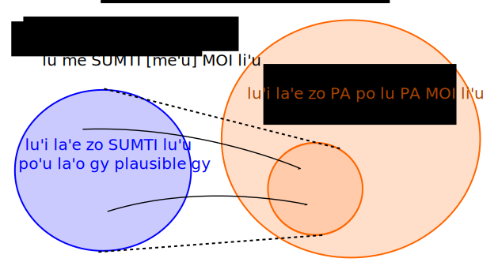

My understanding on mathematical meaning of {me SUMTI [me'u] MOI}
In the expression {me SUMTI [me'u] MOI}, the meaning of it should inherit that of {PA MOI}: "cardinal", "ordinal", "portion", "probability" and "scale" for {mei}, {moi}, {si'e}, {cu'o} and {va'e} respectively. In order to realize it, there must be at least one mapping from a set of signifiés of "plausible" (
see CLL15.4) sumti into a set of possible numbers of MOI. Otherwise the meaning of {me SUMTI [me'u] MOI} cannot be reasonably defined.

On the basis of this interpretation of {me SUMTI [me'u] MOI}, it is essential that {mei} and {moi} are defined so that infinite sets can be treated
[*1].
{mei} and {moi} would be then, for example on the basis of the definition of BPFK, defined mathematically as follows
[*2]:
- [number] mei :
- x1 (mass) are among x2; a set that consists of x1 is equinumerous to a cardinal [number].
- [number] moi :
- x1 is/are the one(s) among x2; a set that consists of x2 is equinumerous to an ordinal number, the order relation of which is defined by rule x3; x1 correspond(s) to [number] in the ordinal.
With these definitions, [number] of {mei} and {moi} can be transfinite cardinals/ordinals. Then {me SUMTI [me'u] MOI} is meaningful even if SUMTI is an irrational number.
- example 1: rational number
- "Platform Nine and Three-Quarters"
- me li so su'i ci fi'u vo me'u moi
- Supoose that a set of plausible SUMTI of {li so su'i ci fi'u vo} is the set Q of all rational numbers (which is equinumerous to the set of all natural numbers, cardinality of which is aleph-0); then there is a mapping from Q into the set of all possible PA of {PA moi}, which are all ordinal numbers.
- example 2: irrational number
- "the π-th"
- me li pai me'u moi
- Supoose that a set of plausible SUMTI of {li pai} is the set R of all real numbers (cardinality of which is aleph-1); then there is a mapping from R into the set of all possible PA of {PA moi}, which are all ordinal numbers.
[*1] {mei} and {moi} are actually defined as follows:
-
mei
-
- x1 is a mass formed from the set x2 of n members, one or more of which is/are x3 (According to CLL18.11.)
-
- galfi lo namcu lo brivla .i x1 gunma gi'e zilkancu le namcu (According to jbovlaste.)
-
- "x1 are [number] in number among x2". In general for any sumti the place structure is "x1 is/are among x2, quantified by [number/lerfu/sumti]". (According to BPFK Section.)
-
moi
-
- x1 is the (n)th member of set x2 when ordered by rule x3 (According to CLL18.11.)
-
- galfi lo namcu lo brivla .i x1 cmima x2 noi porsi x3 ku'o gi'e ckini le namcu x3 (According to jbovlaste.)
-
- "x1 is/are the [number]th among x2 by rule x3". More generally, for any sumti the place structure is "x1 is/are the one(s) among x2 that correspond(s) to [number/lerfu/sumti] by rule x3". (According to BPFK Section.)
[*2] "among":
The term "among" is formalized in the book Plural Predication (Oxford University Press, 2006) by Thomas McKay.
detri fa li 2013-12-11 mi'e la guskant